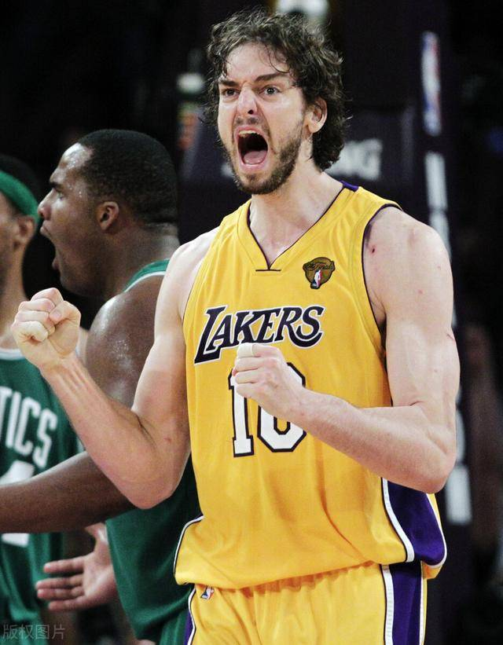
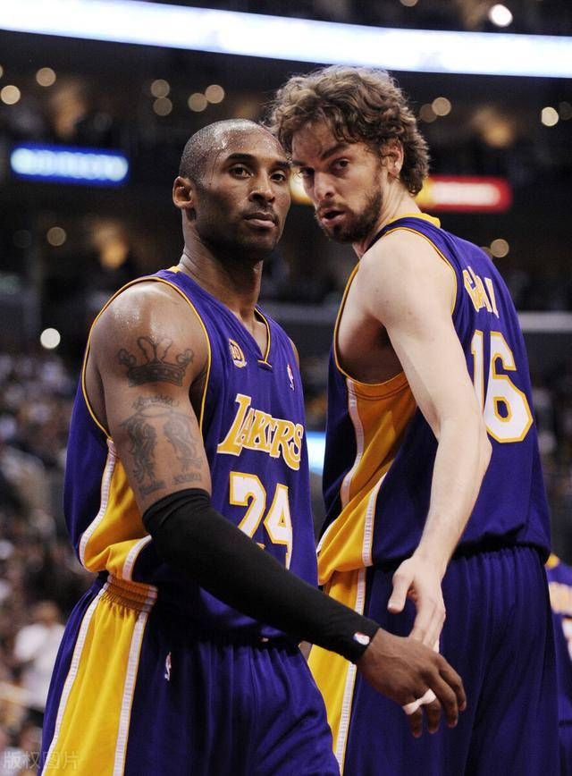
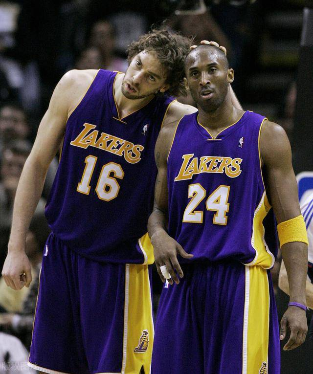
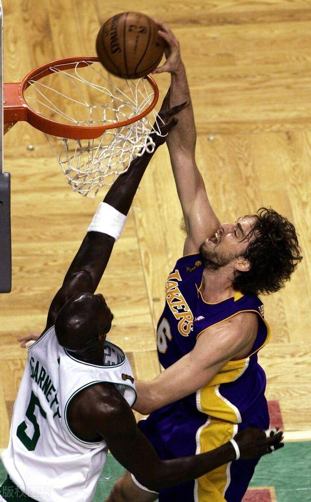
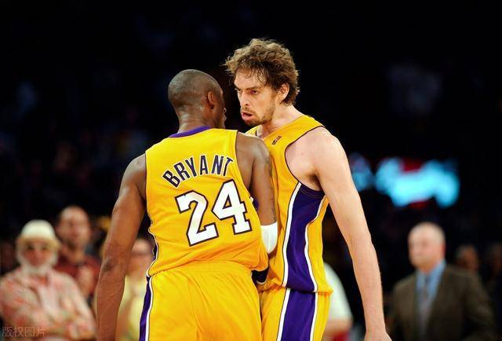

12月10日，大 加索尔接受ESPN采访，他透露自己并不想退役，目前正在训练，希望能够回到NBA打球。大加表示他期盼可以回到湖人打球，与弟弟小加索尔联手，如果成真，这将会有特别的意义。

遭遇严重伤病大加索尔，自2019年3月起就没参加过比赛。

但他本人并不想就此退役从事教练或其他工作。

休赛期小加索尔也来到了哥哥战斗过的地方，兄弟二人在生涯末期重聚湖人相信会成为一段佳话。

另外大加也想借此保持状态出战东京奥运会。

大加一直是技术流的代表，相信若能保持健康，可以在有限的时间里发挥作用